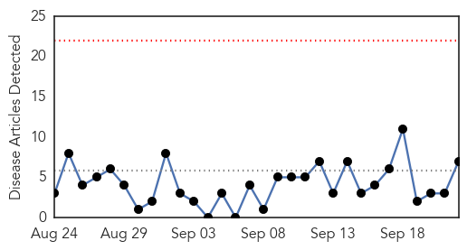
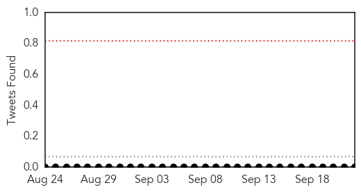
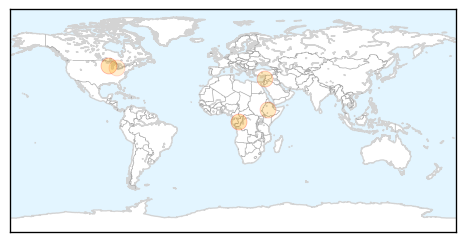
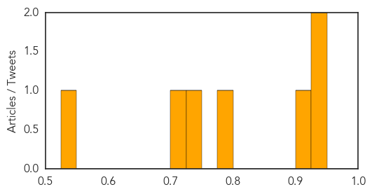

Toggle navigation
Early Warning
Daily Alerts
Meningitis
Sep 22, 2015
Compare to:
-
Dengue Fever
Hemmorhagic Fever
Mold/Fungal Infection
Influenza
Pertussis / Whooping Cough
Middle East Respiratory Syndrome
Cholera
Hepatitis
Chikungunya
Yellow Fever
Bubonic Plague
West Nile Virus
Swine Flu
Ebola
Measles
Unknown
Mumps
30 Day Trends
Web: 0
alerts
, 0
warnings
Twitter: 0
alerts
, 0
warnings
Top Articles:
0.943
DRC: More than 500 people fall victim to drug poisoning
0.933
Coleman schools closed Tuesday because of suspected viral meningitis case
0.919
Classes canceled in Coleman for suspected viral meningitis case
0.782
Regional School Unit 57 says 2 students have meningitis
0.732
Ethiopia launches Meningitis A campaign
0.720
First case of West Nile reported in Allegheny County this year, second case suspected
0.536
Wayne State to develop new, rapid results tests for infants with serious infections
Top Tweets:
No tweets found for Sep 22, 2015
Web/News Articles

Tweets

Article Locations

Article Confidences
